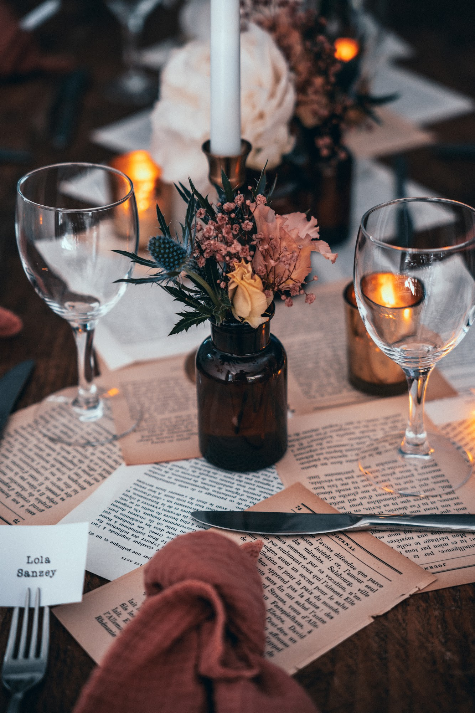
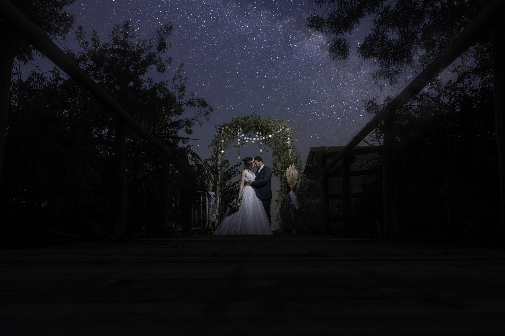

Mariage en hiver : pourquoi c'est une excellente idée
Planifier un mariage en hiver est l'une des plus belles décisions que vous puissiez prendre pour créer une journée chaleureuse, singulière et intimiste. Loin du rush estival, cette saison offre une parenthèse poétique où la lumière rase et les soirées au coin du feu transforment chaque moment en un souvenir précieux. En tant que photographe et vidéaste basé près de Lyon, j'aime particulièrement capter l'atmosphère feutrée des mariages hivernaux dans notre région.

Une lumière d'hiver douce et flatteuse pour vos portraits
En été, le soleil brille fort et haut dans le ciel, créant des ombres marquées sous les yeux et forçant souvent à plisser les paupières. L'hiver apporte une tout autre dynamique : le soleil reste bas sur l'horizon tout au long de la journée. Cette clarté enveloppante agit comme une immense boîte à lumière naturelle, offrant des tons doux et des contrastes délicats.
Pour vos photos de mariage en hiver, cette lumière rasante crée une atmosphère presque cinématographique. Les reflets sur un sol humide ou la brume matinale accrochent les regards et donnent au grain de la peau un rendu d'une grande finesse, sans jamais devoir lutter contre les fortes chaleurs.

Une ambiance chaleureuse et feutrée pour vos proches

Organiser son union durant la saison froide permet de miser sur une scénographie totalement différente. On délaisse les grands jardins en plein soleil pour se concentrer sur l'intérieur des demeures : salles en pierres apparentes, feux de cheminée crépitants, velours profond et profusion de bougies.
Vos invités se regroupent naturellement autour de boissons chaudes, d'un vin chaud épicé ou d'un chocolat fort en cacao au moment du vin d'honneur. Cette proximité physique crée spontanément une ambiance intime et conviviale où tout le monde se réchauffe ensemble.
La sérénité d'un mariage hors saison avec vos prestataires
Rechercher son lieu de réception ou réserver ses artistes préférés peut s'avérer complexe entre mai et septembre. Opter pour un mariage hors saison ouvre le champ des possibles : les beaux domaines du Beaujolais, les châteaux de la Drôme ou les serres anciennes autour de Lyon disposent d'une plus grande flexibilité dans leurs calendriers.
Du côté des prestataires, le rythme est plus apaisé. Moins sollicités par l'enchaînement frénétique des week-ends d'été, nous sommes encore plus disponibles pour échanger, affiner les détails du déroulé et imaginer avec vous des séquences sur mesure pour votre film ou vos clichés.

Des tenues élégantes et des textures riches à explorer

L'hiver autorise une variété vestimentaire d'une grande élégance. C'est l'occasion de porter des étoles en fausse fourrure, des de manches longues en dentelle travaillée, des capes brodées ou des costumes en laine peignée et velours côtelé. Ces matières ajoutent du relief et du caractère sur les images.
Les accessoires prennent également une place de choix : gants délicats, bottines stylisées ou manteaux structurés apportent une touche de modernité éditoriale à vos portraits de couple.
La magie des soirées qui commencent plus tôt
En été, la nuit tombe tard et repousse souvent le début de la fête ou la première danse. En hiver, dès la fin d'après-midi, la obscurité s'installe gentiment et permet de basculer très tôt dans une atmosphère nocturne féerique.
Les guirlandes lumineuses, les bougies disposées sur les tables et les éclairages architecturaux prennent immédiatement toute leur dimension. La transition vers le banquet puis vers la piste de danse se fait sans transition brutale, permettant de profiter pleinement d'une longue soirée festive.

Sublimer les paysages hivernaux entre Rhône et montagnes
Notre région offre des décors extraordinaires pour cette période. Des sommets enneigés de Savoie et Haute-Savoie aux forêts givrées du Pilat ou de l'Isère, le cadre naturel devient une toile de fond grandiose.
Même sans neige, les arbres dénudés révèlent des lignes graphiques superbes, tandis que la campagne environnante prend des teintes dorées et cuivrées d'une sobriété magnifique.

Questions fréquentes
Comment gérer les photos de couple s'il pleut ou s'il fait très froid ?
Nous anticipons toujours le déroulé en Repérant des espaces intérieurs lumineux, comme une belle verrière, un salon au coin du feu ou des sous-pentes de charpente. Pour l'extérieur, nous faisons des sessions courtes de 10 minutes avec un plaid et une boisson chaude à portée de main.
À quelle heure faut-il organiser la cérémonie pour avoir de la lumière ?
En hiver, la nuit tombe vers 17h. Il est idéal de placer la cérémonie civile ou laïque en début d'après-midi, vers 13h30 ou 14h, afin de réaliser les portraits et les photos de groupe avant le coucher du soleil.
Est-il possible de faire des photos en extérieur en tenue de mariés ?
Absolument. Il suffit d'associer des tenues adaptées avec des sous-vêtements thermiques invisibles et de prévoir un joli manteau ou un cape que l'on retire simplement le temps de déclencher.
Quels lieux privilégier pour un mariage en hiver en Auvergne-Rhône-Alpes ?
Privilégiez des domaines bien chauffés disposant de grands espaces intérieurs communicants, comme les châteaux du Beaujolais, les fermes rénovées de l'Ain ou les demeures de charme avec cheminée dans l'Isère.
Vous envisagez de célébrer votre union durant la saison froide ? Racontez-moi votre projet et créons ensemble des images uniques.
Parlons de votre projet